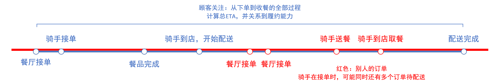
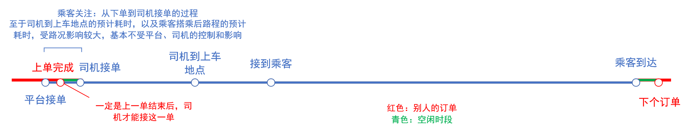
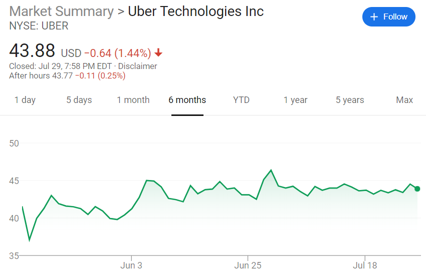
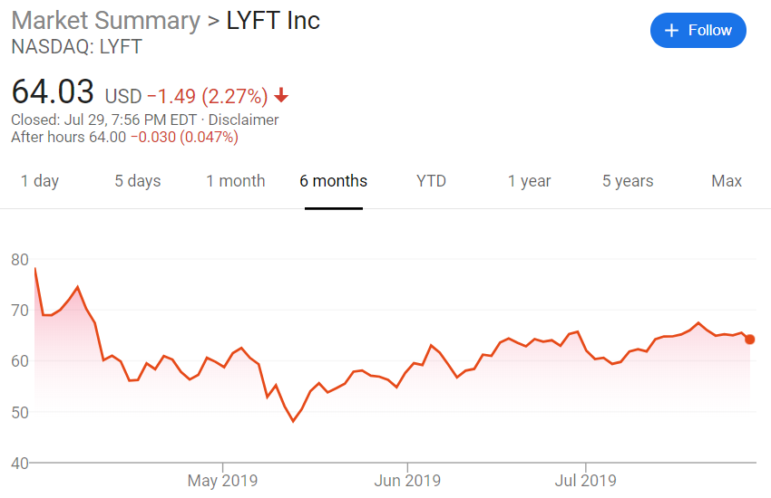
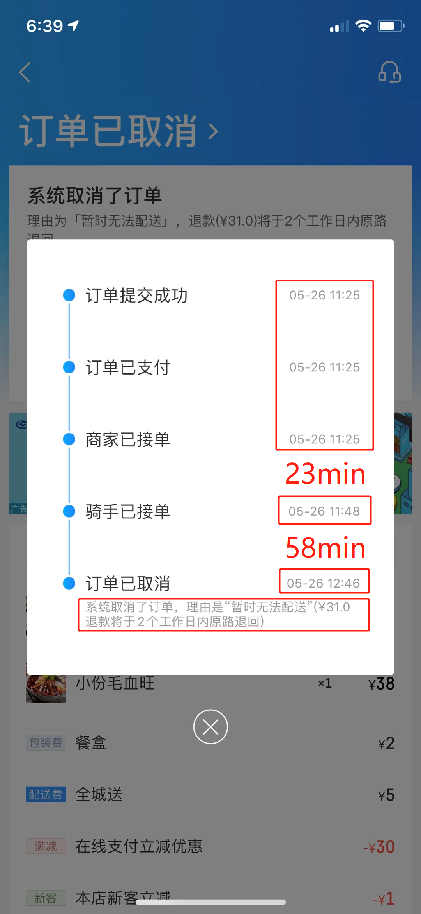

这里记录一些学生产品经理的观察和思考。一家之言，定有谬误之处，请诸君不吝指教。
互联网时代，外卖和约车已经成为满足人们饮食、出行的重要手段。 以美团、饿了么为代表的外卖平台吸引商家入驻，平台的骑手为客户提供送餐服务；以滴滴为代表的网约车平台吸引司机，为客户提供出行服务。 外卖平台和网约车平台重要的收入来源都是对订单的抽成；两平台的重要支出也都包括对送餐员、司机的报酬和补贴。 那么，外卖配送和网约车，有什么相同和不同呢？我将从两平台的现象和属性进行分析。
本文中，在外卖平台点餐的用户，我称为“顾客”，在网约车平台约车的用户，我称为“乘客”。
外卖配送和网约车平台都是通过对骑手、司机的调度，满足用户的需求。
外卖配送：商家将菜品完成后，由（附近的）（有运力的）配送员前去取餐，并将菜品（在规定的时间内）送达客户。
网约车：客户下单后，由（附近的）（有运力的）司机（在一定的时间内）前去接客户，并将用户送达目的地。
可以看到，一个高效率的调度系统，需要满足需求与供给的时空匹配。
需求：对于外卖即为在规定的时间送达；对于网约车即为在一定的时间到达用车地点。
供给：对于外卖即为外卖骑手的运力；对于网约车即为司机的运力。
时空匹配：为提高效率，平台要尽量缩短（有运力的）驾驶员前去接人、外卖员前去取餐的时间和路程。
简单来说，平台不能要求一个正在满载的骑手或已经接到乘客的司机，去接现在的订单，这是时间匹配； 也不能要求一个骑手或司机，从罗湖穿过福田，去接一个南山区的订单，这是空间匹配。
顾客需求：最短时间收到外卖菜品。
乘客需求：最短时间打到车。
看起来，两个群体的需求相似，实际上还是有很大不同的。
顾客关注的是收到菜品的时间，是骑手取餐加上骑手配送的时间。
即使骑手早早就到店了，如果商家没有出餐，最终耽误了送达，这一单整体还是超时了。
外卖配送平台要考虑骑手从接单到取餐到配送的整个过程。因为一个骑手可以同时接多个订单，外卖派单系统相当于多用户，多订单，多过程的派单系统。
乘客的需求是最短时间打到车。司机搭载乘客前往目的地，路途的时间不取决于司机，更多取决于路线和路况。堵在滨海大道上花了半小时才走了2公里，这又不是平台和司机的错。
网约车平台可以主要考虑从派单接单到接到乘客的过程，相当于多用户，单订单，单过程的派单系统。
两个平台对预计到达时间（ETA）的展示和处理也不同。外卖平台展示的ETA 是关乎到履约的。ETA 太早，送货晚于该时间会造成负面影响，超过10分钟，要对顾客进行赔付；
ETA 太晚，会对顾客的用餐造成一定影响，也可能损失订单；
网约车平台展示的ETA 更多是信息性和辅助性的，即使实际到达时间（ATA）超出了ETA，也不会造成实际的负面影响。


考虑到一对多和一对一，以及ETA 信息的精度要求，我认为外卖配送系统较网约车平台相比，具有更高的复杂度。
运力是能够接新订单的能力，就是同时满足在线且空闲（online and available)；无运力分成两种情况，在线不空闲（online not available）和不在线（offline）。
骑手在高峰时间可能手中同时有4-6份订单等待配送；网约车司机接到了订单，在未将乘客送达之前，不能接新的订单——这时是在线不空闲的无运力。
这种无运力可以随时恢复，在完成订单后转成有运力的状态。
由于天气原因，刮台风，下大雨，司机和骑手收车回家了，这就是不在线的无运力。这种无运力一般不能短时内恢复。
外卖骑手和网约车司机职业的重要的特点就是时间自由、灵活，因此也都吸引了一批兼职人员。 兼职人员贡献了很多运力，但同时自由灵活也意味着运力的不确定。 举个例子，工作日下午6点遭遇恶劣天气，外卖和打车的需求都急剧增加。没有强力约束，骑手和司机直接回家，使得本就紧张的供需关系更不平衡。 当供应急缺，需求过多时，需要提升供应，抑制需求，这时最好有一双“看不见的手”介入调节。
提升供应：
平台对骑手和司机的约束较低，主要靠收入来调节。
对于外卖平台，恶劣天气时，订单总数会多很多，而且没有了“超时罚款”的限制，外卖员可以放心同时配送更多的订单。虽然用户支付的配送费没有增加，但外卖员的收入增加了；
部分站点会对出勤率考核，下雨天请假罚款。这种负面手段对专职骑手有一定限制作用，但对占比不少的兼职骑手其实没有约束力。（依据我的计算，兼职骑手贡献了接近40%的运力。）
对于网约车平台，在需求过多时，之前是通过动态溢价等方式吸引司机留存在线，继续为乘客提供服务。
抑制需求：
对于外卖平台，恶劣天气时，在下单前即会提前提示客户配送时间可能变长，并取消“准时达”保证；
对于网约车平台，会引入排队机制，告知排队人数和预计排队时间，或建议支付调度费，从而抑制部分客户的需求。
外卖和网约车平台在运力方面的特性相似，即都存在不确定性，以及都有激励（和抑制）手段，手段不尽一致， 但目前都没有采用增加配送费（运费）的机制。在与滴滴司机闲聊的过程中，司机告诉我，之前的动态溢价模式已经取消， 恶劣天气虽然需求爆棚，但司机也不会增加收入，反而会降低。滴滴平台也没有惩罚下线的机制，所以恶劣天气出车全靠……自觉。
（司机收入为什么会降低？司机认为，下雨天更多乘客会在室内等车，送达时会要求送至单元门；
下雨天一般车行缓慢，路途较往日更加拥堵，这都会增加司机每订单消耗的时间。
另外还有一个司机不愿意接单的原因：
下雨天会将车弄脏，第二天排队洗车时间增长不少。不洗车的话会影响乘客观感，导致司机评分下降。
至于恶劣天气打车的人也多啊，司机说，高峰时间100人排队和10人排队对他来说没有区别。）
为什么在恶劣天气，运力紧张时，外卖不会提高配送费呢？以下是我想到的三个理由：
1）外卖员可以同时接多个订单，即使每一单的配送费不变，运力紧张时可以同时接更多单，还是增加了收入。
2）恶劣天气，气象变化快，城市气象复杂。可能刚才还在下雨，转瞬天空就放晴了；可能呼家楼在下雨，但距离仅700米的东大桥就不下雨。应何时提价、如何提价，数据采集困难，系统复杂，且容易引起用户质疑。
3）考虑到舆论和品牌形象建设。
为什么滴滴平台取消了动态溢价模式呢？以下是我想到的两个原因：
1）动态溢价是全额支付给司机的，意味着滴滴的抽成与动态溢价无关。动态溢价与否，就每一订单而言，滴滴的收入没有变化。
2）之前的动态溢价模式广受非议，取消动态溢价有利于品牌形象。
既然动态溢价是费力不讨好的事儿，滴滴干脆就将其取消。
外卖和打车解决了人们“食”和“行”两个非常高频的需求。但是人们对这两个价格的敏感度却不尽相同。
我认为，用户对外卖平台配送费的价格敏感度极低。以美团为例，美团外卖的平均客单价接近45元（来自2019Q1财报），平均每个订单的骑手成本为4.8元（来自2018财报）。 粗算一下，美团的骑手成本只占订单额的10%左右，更何况配送费是商家出一部分，美团出一部分，顾客出一部分。
让我们想想，为了食品安全，商家现在一般使用质量较好的餐盒，收餐盒费1-3元的商家不在少数。有多少人因为餐盒收费，就不点餐了呢？
配送费是3元4元还是5.5元，有多少顾客因为这个而放弃点外卖，改出门吃饭或在家做饭了？
当人们坐在家里打开外卖软件，他想解决的是在家吃什么的问题，而不是是否在家吃的问题。这时外卖的竞争对手是门店，而如今的中国市场上，大部分门店是要比外卖还贵的（这个问题以后再说）。
外卖平台已经在和门店的竞争中获胜了，只要把用户留在平台内，用户在选购餐品时更多关注的是口味。配送费浮动对整个平台的影响我认为是不大的。
举个例子，配送费整体上升1元由顾客支付，粗算下来，骑手的每单收入从4.8增加至5.8元，增收21%，而顾客多支付1元，只占订单45元的2%。还是很有压榨的空间。
人们对打车价格的敏感度却极高，甚至之前安卓用户和苹果用户，常用用户和非常用用户打车费用的差异都要引发剧烈讨论。
为什么人们对打车的价格如此敏感？这时要看他的竞争对手是谁了。
人们使用网约车软件，本质上是要解决“回家”“去公司”的出行问题。
这时，网约车打车的竞争对手，就是城市的公共交通系统，包括出租车，还包括公交地铁，包括步行，甚至共享单车等新型出行方式。
在不迫切需要的情况下，网约车的价格稍微一提升，就会遭到整个城市其他出行方式的围追堵截。
况且，打车经常为家-公司，公司-家往返，路线比较单一，有了变动会很快发现。假如之前每天回家35元，今天变到38元，你就会想是因为什么而涨价的。
如果你感觉今天和往常一样啊，也没有堵车，路况也正常，那么很可能平台就要承受你的怀疑和怒火了；
但谁天天吃同一家的同一个菜品？
外卖和打车的重要收入都是订单的抽成，但却有很大不同。
外卖平台是对整单抽成，抽成比例最高可达26%，且配送费由商家、平台、顾客三方支付。
举个例子，小李在平台点了一份点心套餐，实付50元（含5元运费），假如按20%的比例进行抽成，平台抽走的是45*20%=9元，然后配送费商家再出2元，商家收到的就是45-9-2=34元。 平台这一单给骑手9元，则配送费是平台出2元，商家出2元，客户出5元，骑手收入9元。 平台净收入7元。平台的毛利率为7/50=14%，正好2019Q1财报中，美团外卖业务的毛利率就为14.39%，看来这个例子还是比较具有代表性的。
在这个例子中，外卖平台有了收入；骑手有了收入，这两个收入都是从商家手中抽走的。看起来商家吃了亏，那么问题来了，为什么商家还要入驻平台？
我之前也有过疑问，我家楼下有一家“南城香”快餐店，主营盖饭、烤串。他们常年参与40-20的活动，而且外卖和堂食的价格是一样的。
我喜欢他们家的烤羊肉串，门店3.5，平台上4元一串，我就常常在平台上下单10串：满40减20，加上6元配送费，用一个2元红包才是24元。
在这一订单中，商家实收到的是24-6=18元，还要再支付给平台抽成，到手可能都不足15元。
对于我来说都是一样的东西（10根香喷喷的羊肉串），堂食能收到35块，外卖平台只能收到15块，为什么他们还要做呢？
商家的想法可能有提升知名度，培养忠诚度，从线上为线下引流；但最重要的，外卖这一块还是赚钱的。你不做有别人会做，所以即使少赚点，也要把单接下来。 所以外卖平台的商业模式真的是很精巧，它发现了用户“不想做饭不想出门”的需求，通过引入众多商家，使商家在平台内部激烈竞争，即使少赚钱但仍不忍退出。消费者得到好处的同时，平台赚着订单的抽成。
与外卖相比，打车平台就没有这么幸运了。不知道滴滴快滴高德美团在杀向这个领域时，有没有想过这里的水这么深。
除非有特殊需求，大部分人选择出行方式的要求就是“快捷，便利”。互联网打车面对的竞争对手是全部交通方式，包括出租车，还包括公交地铁，包括步行，甚至共享单车等新型出行方式。 下面是我搜索到北京和全国的部分数据：
根据“来去之间”的微博，北京市每年对出租车的补贴是7亿；
根据叶青对全国28个开通地铁城市的统计，平均每车每公里运营成本23.8元，运营收入17.2元，意味着还不算建设成本，一辆地铁跑一公里就亏6.6元；
北京市在2014年地铁涨价前每年补贴地铁高达100亿；在2011年时补贴公交就达到156.9亿。
公交地铁（甚至出租车），是政府保证城市公众出行的重要方式，因具有强烈的公益、福利性质，得到巨额补贴，可以保证票价的低廉。 这个市场并不是“自由市场”。政府掏得出上百亿的钱进行补贴，来自卖地盖楼等多种渠道，因为公交地铁覆盖到了，地也卖得上价了；你打车平台从哪儿掏出那么多钱？
想做到比出租车服务好的同时比出租车价格低，长期来看，乘客、司机、平台，三方中最后总有一方不答应。
共享单车甚至都是公共交通的一种。在2017年作为“新四大发明”之一亮相全国高考题，风头可谓一时无两。现在两年过去，行业前列的ofo勉力支撑运转，摩拜单车一年亏损45.5亿……市场给出了教训。
那还有一个问题，为什么网约车Uber和Lyft在美国做起来了？简单来说，在美国的成功，源于出租车费贵、公共交通差的大背景。网约车的出现，使乘客找到了价格低、服务优的出行方式。 即便如此，Uber和Lyft这对难兄难弟的在今年上市，迄今的股价走势反馈出市场对他们盈利能力的质疑。Uber今天又爆出了裁员400人的消息……网约车行业的前景略显暗淡。
 
在上文中，我简单描述了顾客和乘客的需求，“在最短时间内收到外卖菜品”和“在最短时间内打到车”。 实际上，外卖平台和打车平台上，参与方还包括骑手和司机，平台也有自己的打算，四方/三方考虑的问题更加复杂。
（1）平台使用了一系列规则，然而又会产生新的问题，这是一个动态的过程。
外卖平台的参与方为四方，分别为顾客、餐厅、骑手以及平台。 ETA系统保证了在最差的情况下，顾客也能在一个固定的，可以预估的时间之内收到菜品。
但是，对于骑手来说，就像滴滴司机不在乎高峰期是10人排队还是100人排队一样，骑手只要在规定的时间内将餐品送达， 那么是ETA-20分钟，还是ETA-0分钟，甚至ETA+9分钟，骑手是不在乎的。 从常理上讲，平峰时骑手接单量少，理论上应该送得更快，但实际来看，有不少骑手还是会慢悠悠地参考ETA送达。为什么呢，他们会稍事等待，关注在这段时间内是否有附近或顺路的订单。
骑手没有任何问题——在规则允许的范围内尝试增加收入是人之常情。但餐品与超市生鲜类有不同，餐品的尽快送达更重要。 更何况平台为了方便顾客进行追踪，都开通了“订单追踪”功能。看到20分钟前骑手已到店，现在还仍未送出； 送出后又晃晃悠悠绕到了别的地方，最后在即将超时时将将送达，遇到嗷嗷待哺的顾客，难免不会火大。
那么，骑手为增加收入而进行的主动攒单，实际上是影响了顾客和商家的。平台能否尝试尽量提高骑手的配送效率，减低骑手在平峰的配送时间呢？ 提高配送效率，可能包括更弹性的动态ETA，可能包括运价与送达时间挂钩，可能包括派单规则……我不知道配送平台有没有做过这样的尝试。
打车平台当然也面临着规则的制定与破解。 “钻空子”是无法避免的，这是运营和用户斗智斗勇，是一个长期的过程。
（2）建立更强的供需调节机制
前面说过，在运力紧张时，供需关系紧张，需要提升供应，抑制需求。提升供应主要靠收入的提高，抑制需求主要是提示用户配送时长的增加以及取消“准时达”保证。 这些措施在些许失衡时还可以调节，但在严重失衡时便显得力不从心。我曾在一个大雨的中午点了外卖，配送费没有变化，由于只提示了配送时间可能延长，我也没有多在意。 在11:25时下单，11:48时骑手接单，可以看到骑手的轨迹，一直在各处配送。但到了12:46，系统直接取消了订单，理由是“暂时无法配送”。这个城市又多了一个挨饿的人。

城市在恶劣天气，需求急剧提升，而运力不能急速提升，造成的供需不匹配是完全可以理解的。但是为什么外卖平台没有使用更有力的调节手段，例如，配送费涨价、起送费提高呢？ 在供需调节上，网约车平台也有类似的问题。动态调价机制原本是解决供需矛盾的利器，却被滴滴弃用。弃用的原因上面说过，因为没有落到好处且社会舆论不佳。
往深层分析，企业还是要在“冒险改变”和“因循守旧”之间做出抉择，要在“社会评价”和“社会效益”之间做出抉择。 改变还是不变，是战术上的，而是否去Do the right thing，是战略层面的。“做正确的事”，“科技向善”，都是互联网公司的美好愿景和使命。但到了行动层面，执行起来要面对风险和质疑。“道阻且长”。